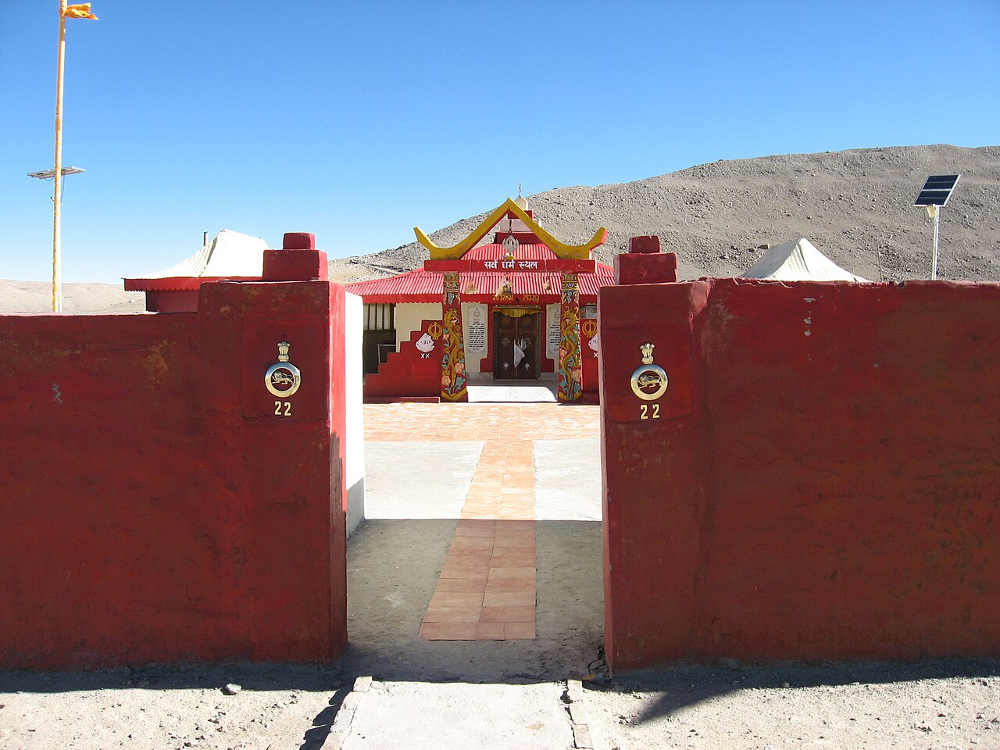
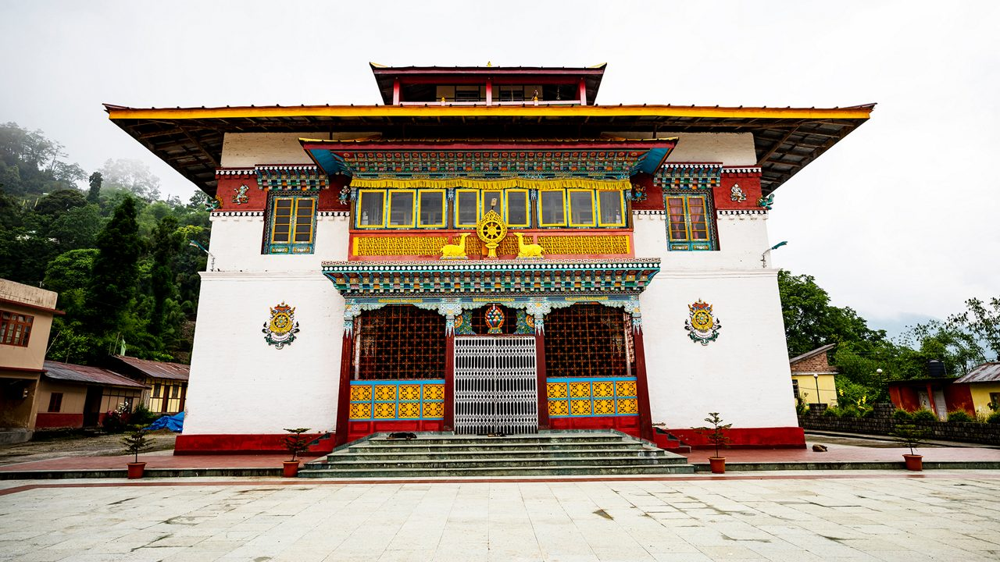
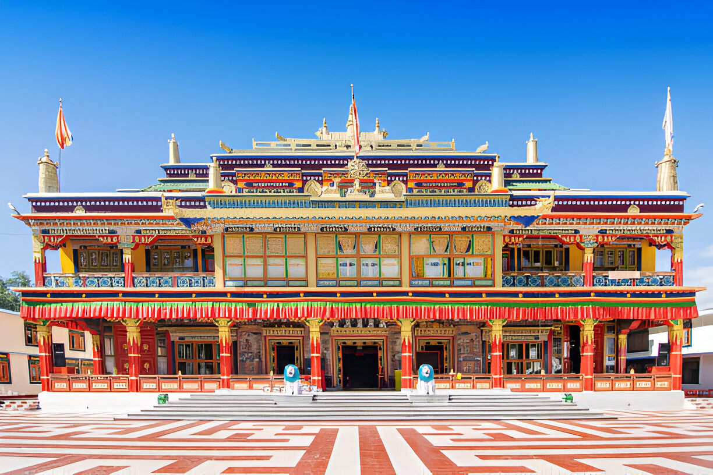

Monasteries of Sikkim
Hidden Gems of Sikkim

Gurudwara Gurudongmar
Gurudwara Gurudongmar is a small but spiritually significant site near Gurudongmar Lake in North Sikkim. It commemorates the visit of Guru Nanak Dev Ji and is considered sacred by Sikhs, while the nearby lake is revered by Buddhists as blessed by Guru Padmasambhava (Guru Rinpoche). The Gurudwara was initially maintained by the Indian Army and now serves as a place of worship and pilgrimage for locals and tourists alike.
East Sikkim

Rumtek Monastery
Rumtek Monastery, also known as the Dharma Chakra Centre, is the most prominent monastery in Sikkim. Originally built in the 16th century and later rebuilt in 1966 by the 16th Karmapa, it serves as the main seat of the Kagyu sect outside Tibet. The monastery is admired for its traditional Tibetan architecture, massive prayer hall, golden stupa, and priceless relics.Surrounded by lush hills and offering panoramic views of Gangtok, Rumtek is both a spiritual haven and a cultural landmark.

Enchey Monastery
Enchey Monastery, perched on a hilltop overlooking Gangtok, is one of the most significant religious centers in Sikkim. Established in 1909 under the Nyingma order of Vajrayana Buddhism, it is believed to have been built on the site blessed by Lama Druptob Karpo, a revered tantric master known for his ability to fly. The monastery is dedicated to the protective deities Khangchendzonga and Yabdean, who are regarded as guardians of the region. Architecturally, Enchey reflects the style of a Chinese pagoda, with colorful murals and intricate woodwork adorning its prayer hall.
West Sikkim

Dubdi Monastery
Dubdi Monastery, located near Yuksom, holds the distinction of being the oldest monastery in Sikkim, founded in 1701 soon after the coronation of the first Chogyal (king). This monastery is modest yet deeply revered, set in a tranquil location amidst dense forests and scenic hills. Its interiors preserve rare manuscripts, ancient relics, and exquisite wall paintings depicting Buddhist deities. The monastery is closely associated with the foundation of Sikkim and the Nyingma order of Tibetan Buddhism. For visitors, Dubdi offers not just a religious experience but also a journey into the roots of Sikkimese culture and spirituality.

Pemayangtse Monastery
Pemayangtse Monastery, located near Pelling, is one of the most important and prestigious monasteries in Sikkim, established in the 17th century by Lama Lhatsun Chenpo. Belonging to the Nyingma order of Tibetan Buddhism, it was originally built for monks of pure Tibetan lineage. The monastery is renowned for its intricate architecture and rich artistic heritage, with beautifully painted walls, sculptures of Buddhist deities, and a striking seven-tiered wooden structure called “Sangtok Palri,” representing the heavenly abode of Guru Padmasambhava.
North Sikkim

Phodong Monastery
Phodong Monastery, situated about 28 km from Gangtok, is one of the six major monasteries of Sikkim, originally built in the early 18th century by the Chogyal Gyurmed Namgyal. Belonging to the Kagyu sect of Tibetan Buddhism, the monastery is known for its striking murals, ancient scriptures, and the serene ambience of its hilltop location. The present structure was reconstructed in the 20th century after the original building was damaged, yet it continues to preserve the spiritual legacy of its past. Phodong is especially vibrant during its annual Chaam festival.

Phensang Monastery
Phensang Monastery, located on a gentle hill slope about 9 km north of Gangtok, is one of the largest monasteries in Sikkim. Established in 1721 during the reign of Jigme Pawo, it belongs to the Nyingma order of Tibetan Buddhism and holds great spiritual importance. The monastery was destroyed by a devastating fire in 1947 but was later rebuilt, continuing its legacy as a vibrant religious center. Surrounded by lush forests and offering picturesque views of the surrounding valleys, Phensang is especially famous for its annual festival held just before the Tibetan New Year.
South Sikkim

Ralang Monastery
Ralang Monastery, situated near Ravangla in South Sikkim, is a prominent center of the Kagyu sect of Tibetan Buddhism. It was originally built in 1730 by the fourth Chogyal, Gyurmed Namgyal, and later expanded with the establishment of the newer monastery, Palchen Choeling, in 1995. The monastery is renowned for its stunning architecture, vibrant frescoes, and a vast collection of thangkas and sacred relics. Ralang is also the venue for the grand Pang Lhabsol and Mahakala Dance festivals, where monks perform elaborate masked dances that attract devotees and visitors alike.

Samdruptse Monastery
Samdruptse Monastery, located near Namchi in South Sikkim, is best known for the towering 135-foot statue of Guru Padmasambhava, which stands as one of the tallest of its kind in the world. Built in the late 20th century under the vision of the Dalai Lama, the monastery and statue complex symbolize peace and protection for the land. The golden-hued statue, seated in a meditative posture, overlooks the hills and valleys, offering a majestic sight visible from miles away. Inside the monastery, devotees can see sacred relics, vibrant wall paintings, and spaces for prayer and meditation.